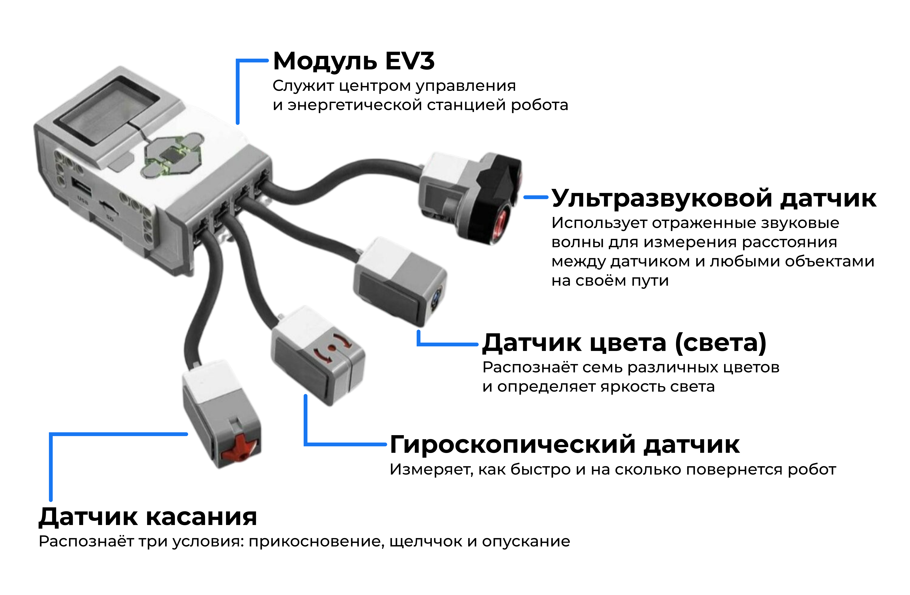
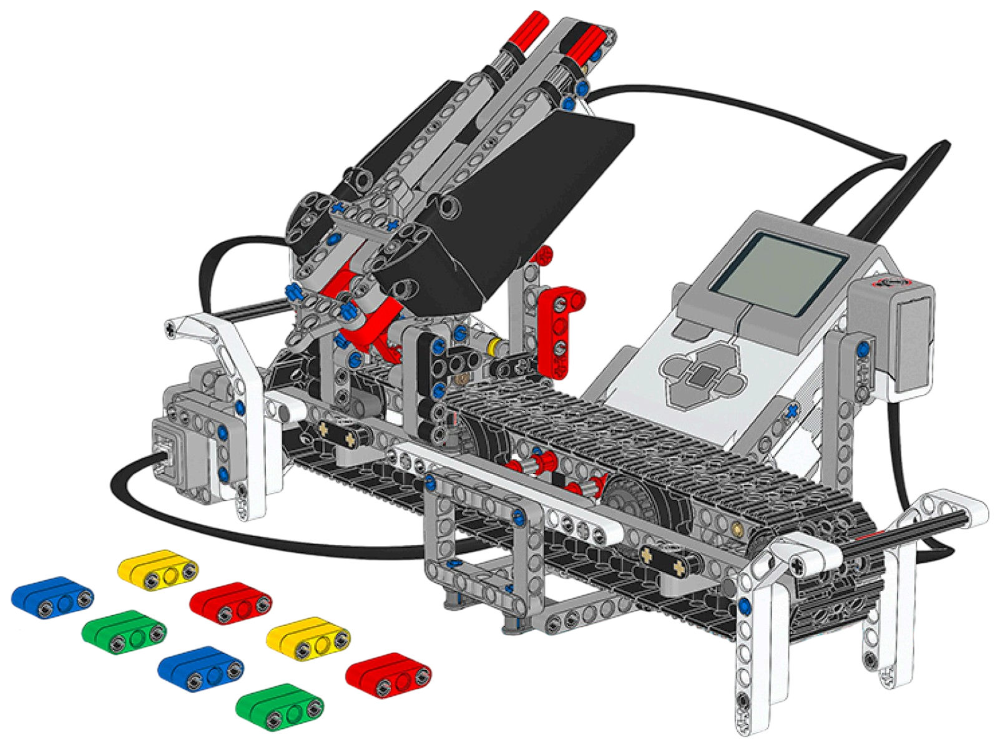
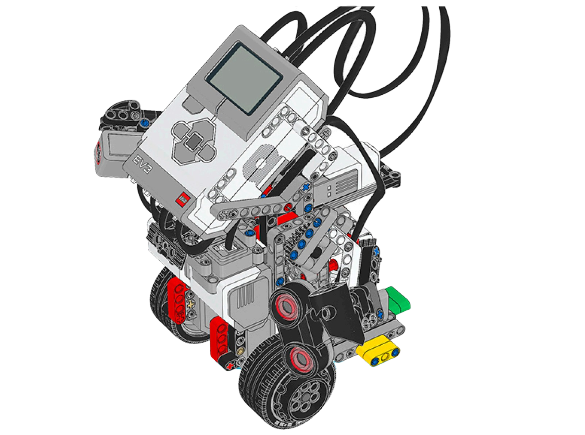
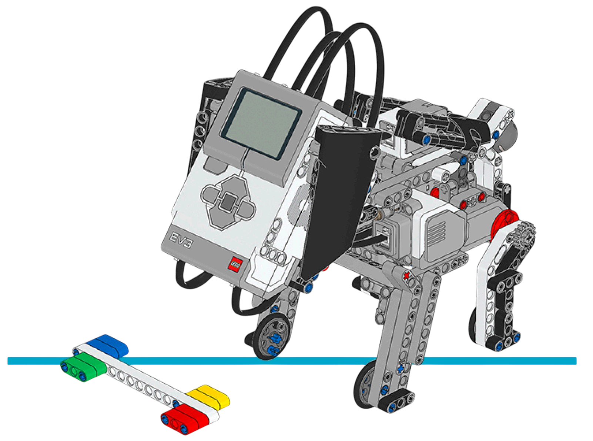
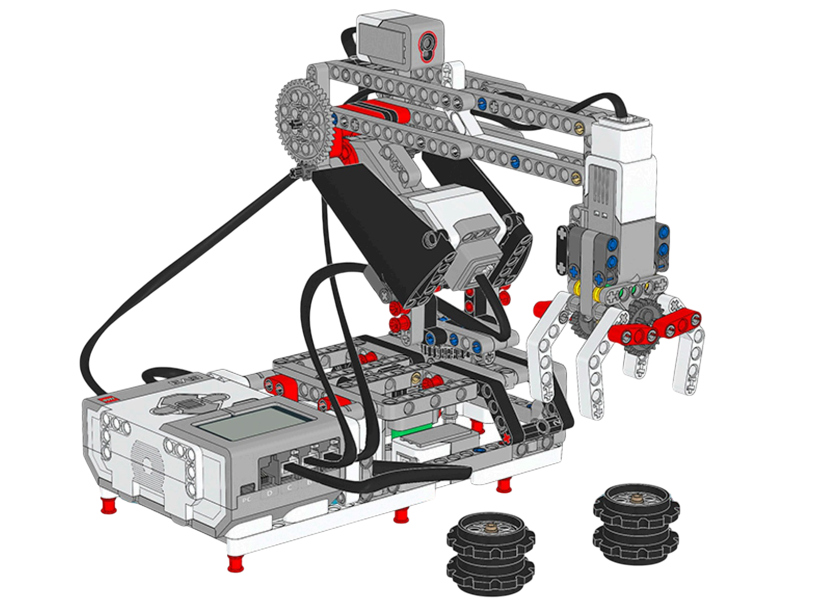

Сенсоры EV3
Теоретический блок
Что такое сенсор
Сенсор — это устройство, которое получает информацию из окружающей среды и передаёт её управляющему блоку робота. В робототехнике сенсоры можно сравнить с органами чувств человека: они помогают роботу «видеть», «чувствовать» препятствия, определять расстояние, цвет поверхности или изменение положения.
Без сенсоров робот выполняет только заранее заданную последовательность команд. Например, он может ехать вперёд несколько секунд, повернуть и остановиться. Но такой робот не понимает, что происходит вокруг него. Если перед ним появится препятствие, он продолжит движение, потому что не получает информации об окружающей среде.
С использованием сенсоров робот становится более самостоятельным. Он может остановиться перед стеной, ехать по линии, реагировать на нажатие, различать цвета и выполнять разные действия в зависимости от условий.
Как сенсоры подключаются к EV3
Сенсоры LEGO MINDSTORMS EV3 подключаются к входным портам управляющего блока. Обычно для этого используются порты с номерами 1, 2, 3 и 4 . Моторы подключаются отдельно — к портам A, B, C и D .

Схема подключения сенсоров LEGO MINDSTORMS EV3 к управляющему блоку
При создании программы важно правильно указать порт, к которому подключён сенсор. Если датчик подключён к одному порту, а в программе выбран другой, робот может работать неправильно или вообще не реагировать на показания сенсора.
Как робот использует данные сенсоров
Данные, полученные от сенсоров, используются в программе для принятия решений. Например, робот может двигаться вперёд до тех пор, пока расстояние до препятствия больше 20 сантиметров. Если препятствие становится ближе, робот останавливается, отъезжает назад или поворачивает.
Таким образом, сенсоры позволяют составлять программы, в которых робот действует не только по времени, но и в зависимости от ситуации.
Как работает сенсор в роботе
Сенсор не выполняет действие сам по себе. Он передаёт данные управляющему блоку EV3, а программа уже решает, что должен сделать робот.
Пример из жизни
Человек видит препятствие и может остановиться или обойти его. Робот без сенсоров этого сделать не сможет. Но если у него есть ультразвуковой датчик, он определяет расстояние до препятствия и может изменить движение.
Сенсоры EV3 и их назначение
| Сенсор | Что определяет | Пример использования |
|---|---|---|
| Датчик касания | Нажатие или отпускание кнопки | Робот останавливается при столкновении с препятствием |
| Датчик цвета | Цвет поверхности или уровень отражённого света | Робот движется по линии или сортирует объекты по цвету |
| Ультразвуковой датчик | Расстояние до объекта | Робот обнаруживает препятствие и объезжает его |
| Гироскопический датчик | Угол поворота и изменение положения | Робот выполняет точный поворот или удерживает равновесие |
Проверь себя: какой сенсор нужен?
Нажмите на ситуацию, чтобы увидеть, какой сенсор лучше использовать.
Подойдёт ультразвуковой датчик, потому что он измеряет расстояние до объекта.
Подойдёт датчик цвета, потому что он может различать светлую и тёмную поверхность.
Подойдёт гироскопический датчик, потому что он измеряет угол поворота робота.
Подойдёт датчик касания, потому что он определяет, нажата кнопка или отпущена.
Основные сенсоры EV3
Датчик касания
Датчик касания определяет, нажата кнопка или отпущена. Он используется для реакции робота на столкновение с препятствием или на нажатие пользователем.
Пример: робот едет вперёд, пока не коснётся препятствия. После нажатия датчика он останавливается, отъезжает назад и поворачивает.
Датчик цвета
Датчик цвета определяет цвет поверхности или уровень отражённого света. Его можно использовать для движения по линии, сортировки объектов по цвету и распознавания цветовых меток.
Пример: робот движется по чёрной линии на белом фоне, ориентируясь на показания датчика цвета.
Ультразвуковой датчик
Ультразвуковой датчик измеряет расстояние до объекта. Он помогает роботу обнаруживать препятствия и принимать решение о дальнейшем движении.
Пример: робот останавливается, если расстояние до стены становится меньше заданного значения.
Гироскопический датчик
Гироскопический датчик измеряет угол поворота и скорость вращения. Он помогает выполнять точные повороты и контролировать положение робота.
Пример: робот поворачивает ровно на 90 градусов.
Зачем роботу нужны сенсоры
Сенсоры позволяют роботу выполнять действия не только по времени или заранее заданной последовательности, но и на основе полученных данных. Благодаря этому робот может реагировать на препятствия, распознавать цвет, двигаться по линии, выполнять точные повороты и изменять своё поведение в зависимости от окружающей среды.
Изучение сенсоров является важным этапом в освоении робототехники, потому что именно с их помощью создаются более сложные и интересные модели роботов.
Практический блок
Практическая часть занятия направлена на закрепление знаний о сенсорах EV3. Обучающиеся выполняют задания, в которых робот должен реагировать на показания датчиков.
Задание 1. Робот определяет цвет объекта
Цель: научиться использовать датчик цвета для распознавания объектов и выполнения действий в зависимости от их цвета.
Соберите модель робота «Сортировщик цветов». Изучите, как робот использует датчик цвета для определения цвета объекта и последующей сортировки.
- Откройте инструкцию по сборке робота «Сортировщик цветов».
- Определите, где расположен датчик цвета.
- Соберите модель по инструкции.
- Запустите программу сортировки.
- Проверьте, как робот реагирует на объекты разных цветов.
- Сделайте вывод, как данные датчика цвета используются в программе.
Подсказка: датчик цвета считывает цвет объекта, после чего программа выбирает действие для сортировки. Обратите внимание, как разные цвета связаны с разными командами робота.
Дополнительное задание: предложите, как можно изменить программу, чтобы робот сортировал больше цветов.
Задание 2. Робот удерживает равновесие
Цель: познакомиться с использованием гироскопического датчика для контроля положения робота.
Соберите модель робота «Гиро-Бой». Изучите, как гироскопический датчик помогает роботу определять изменение положения и удерживать равновесие.
- Откройте инструкцию по сборке робота «Гиро-Бой».
- Определите, где расположен гироскопический датчик.
- Соберите модель по инструкции.
- Запустите программу управления роботом.
- Понаблюдайте, как робот реагирует на изменение положения.
- Сделайте вывод о роли гироскопического датчика.
Подсказка: гироскопический датчик помогает определить угол наклона и изменение положения робота. На основе этих данных программа управляет моторами, чтобы робот не падал.
Дополнительное задание: объясните, почему без гироскопического датчика такой робот не сможет устойчиво двигаться.
Задание 3. Интерактивный робот-щенок
Цель: изучить, как несколько сенсоров могут использоваться для создания интерактивного поведения робота.
Соберите модель робота «Щенок». Изучите, как робот реагирует на прикосновения и действия пользователя. Определите, какие сенсоры используются для изменения поведения робота.
- Откройте инструкцию по сборке робота «Щенок».
- Определите, где расположен датчик касания.
- Определите, где расположен датчик цвета.
- Запустите программу поведения робота.
- Проверьте, как робот реагирует на прикосновение.
- Проверьте, как робот реагирует на действия рядом с датчиком цвета.
Подсказка: обратите внимание, какие действия пользователя вызывают изменение поведения робота. Датчик касания может использоваться для реакции на прикосновение, а датчик цвета — для определения действий рядом с мордочкой робота.
Дополнительное задание: предложите новое поведение для робота-щенка: например, реакцию на определённый цвет или серию нажатий.
Задание 4. Роботизированная рука
Цель: рассмотреть применение исполнительных механизмов и возможное использование сенсоров при выполнении механических действий.
Соберите модель робота «Манипулятор». Изучите, как роботизированная рука может выполнять захват, перемещение и сортировку объектов.
- Откройте инструкцию по сборке робота «Манипулятор».
- Определите основные части конструкции.
- Соберите модель по инструкции.
- Проверьте работу механизма захвата.
- Подумайте, какой сенсор можно добавить для автоматизации работы руки.
Подсказка: роботизированную руку можно использовать вместе с датчиком цвета для сортировки объектов или с датчиком касания для определения момента захвата предмета.
Дополнительное задание: предложите, как можно доработать модель, чтобы она автоматически определяла объект перед захватом.
Инструкции по сборке
В этом разделе размещены инструкции по сборке моделей LEGO MINDSTORMS EV3, которые можно использовать при изучении сенсоров. Каждая карточка содержит название робота, изображение, используемые сенсоры и ссылку на PDF-инструкцию.

Робот «Сортировщик цветов»
Оригинальное название: Color Sorter.
Сенсор: датчик цвета.
Модель демонстрирует, как робот может определять цвет объекта и выполнять действие в зависимости от полученных данных.
Открыть инструкцию по сборке Открыть инструкцию по программированию
Робот «Гироскоп»
Оригинальное название: Gyro Boy.
Сенсор: гироскопический датчик.
Модель показывает применение гироскопического датчика для контроля положения робота и удержания равновесия.
Открыть инструкцию по сборке Открыть инструкцию по программированию
Робот «Щенок»
Оригинальное название: Puppy.
Сенсоры: датчик касания, датчик цвета.
Интерактивная модель, которая демонстрирует, как робот может реагировать на действия пользователя и изменять своё поведение.
Открыть инструкцию по сборке Открыть инструкцию по программированию
Робот «Манипулятор»
Оригинальное название: Robot Arm.
Назначение: захват и перемещение объектов.
Модель может использоваться как дополнительный пример применения робота для выполнения механических действий и сортировки объектов.
Открыть инструкцию по сборке Открыть инструкцию по программированиюВопросы для самопроверки
1. Что такое сенсор и какую роль он выполняет в робототехнике?
Сенсор — это устройство, которое получает информацию из окружающей среды и передаёт её управляющему блоку робота. В робототехнике сенсоры помогают роботу реагировать на препятствия, цвет, касание, расстояние или изменение положения.
2. Для чего используется датчик касания?
Датчик касания используется для определения нажатия. С его помощью робот может реагировать на столкновение с препятствием или на действие пользователя.
3. Как можно использовать датчик цвета?
Датчик цвета можно использовать для определения цвета объекта, движения по линии, сортировки предметов по цвету и распознавания цветовых меток.
4. Какой сенсор помогает роботу определять расстояние до препятствия?
Для определения расстояния до препятствия используется ультразвуковой датчик. Он позволяет роботу обнаруживать объекты перед собой и изменять движение.
5. Почему важно правильно указывать порт подключения сенсора?
Если сенсор подключён к одному порту, а в программе указан другой, робот не сможет правильно получить данные. Из-за этого программа может работать неправильно или совсем не реагировать на сенсор.
6. Для чего используется гироскопический датчик?
Гироскопический датчик используется для измерения угла поворота и изменения положения робота. Он помогает выполнять точные повороты и удерживать равновесие.
7. Как сенсоры помогают сделать поведение робота более самостоятельным?
Сенсоры позволяют роботу получать данные об окружающей среде и выбирать действия в зависимости от ситуации. Например, робот может остановиться перед препятствием, повернуть, распознать цвет или отреагировать на прикосновение.
8. Какие сенсоры используются в модели робота «Щенок»?
В модели робота «Щенок» используются датчик касания и датчик цвета. Они помогают роботу реагировать на действия пользователя и изменять своё поведение.
9. Какую роль выполняет гироскопический датчик в модели «Гиро-Бой»?
В модели «Гиро-Бой» гироскопический датчик помогает роботу определять наклон и удерживать равновесие. На основе данных датчика программа управляет моторами.
10. Какие практические задачи можно решить с помощью сенсоров EV3?
С помощью сенсоров EV3 можно создавать роботов, которые сортируют предметы по цвету, двигаются по линии, избегают препятствий, реагируют на прикосновения, выполняют точные повороты и взаимодействуют с пользователем.